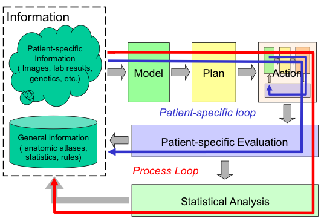

Enhanced Introduction to Computer-Integrated Interventional Medicine#
Computer-integrated interventional medicine is an interdisciplinary research area where computerized techniques are applied to every aspect of interventional medicine. A close analogy is the design and manufacturing of an automobile: computer software is used in the creation, modification, analysis, and optimization of surgical approaches, and computer software and mechatronics are used to control and automate the execution of these surgical maneuvers. In other words, computer-integrated interventional medicine is the application of Computer Aided Design (CAD), Computer Aided Manufacturing (CAM), and Quality Control to interventional medicine.
{kind=link}
Image courtesy of Dr. Russel Taylor, accessed July 7, 2025.
The Manufacturing Analogy in Clinical Practice#
Just as modern automotive manufacturing transforms raw materials into precision vehicles through systematic processes, computer-integrated interventional medicine transforms diagnostic information into therapeutic outcomes:
In Automotive Manufacturing:
CAD: Engineers create 3D models, run crash simulations, optimize aerodynamics
CAM: Robotic assembly lines position components with sub-millimeter precision
QC: Real-time sensors monitor quality, detect defects, trigger corrections
In Interventional Medicine:
CAD (Planning): Surgeons create patient-specific 3D models, simulate procedures, optimize approach trajectories
CAM (Execution): Navigation systems guide instruments with sub-millimeter accuracy to targets
QC (Assessment): Outcome tracking systems monitor results, identify complications, improve future procedures
This analogy extends beyond surface similarities—both domains require integration of design software, precision manufacturing tools, and quality assurance systems to achieve consistent, high-quality outcomes.
In this regard, interventional medicine is treated, using engineering language, as a closed loop process. This basic process of
Combining specific information about the patient with the physician’s general knowledge to determine the patient’s condition,
Formulating a plan of action,
Carrying out this plan, and
Evaluating the results has existed since ancient times.
Traditionally, these steps all have taken place in the physician’s head: the ability of modern computer-based technology to assist humans in the processing and acting on complex information will profoundly enhance this process.
What is Computer Assisted Intervention (CAI)#
Computer Assisted Intervention (CAI) is a sub-discipline of computer-integrated interventional medicine, focusing on surgical interventions. CAI corresponds to the CAM of the computer-integrated interventional medicine.
Interventional medicine typically takes place in three stages:
Planning: For any patient, we need to
Perform diagnosis: find out what is wrong. This is typically performed using aids from medical mechatronics (e.g. blood pressure monitor) and medical imaging (e.g. ultrasound and x-ray)
Formulate a course of treatment: for example, if a patient has a tumour in the liver, should it be surgically removed, undergoing chemotherapy, or treated with thermal or chemical ablation?
This planning stage corresponds to computer-aided design (CAD).
Execution: Once the plan is formulated, how to make sure it was executed as planned? For example, if the course of treatment for a patient with liver tumour is thermal ablation, how do we place the ablation applicator at the intended location to ensure the complete tumor necrosis?
This Execution stage, when assisted using computerized method, corresponds to computer-aided manufacturing (CAM).
Total Quality Management: How do we know if what was planned and executed was effective? Past outcomes can be analyzed to provide insight for further surgery, thus the quality control is the feedback to this closed-loop process of CAI.
Core Technology Pillars of CAI#
Computer-assisted intervention rests on four foundational technology pillars:
Medical Imaging and Visualization#
Modern interventional medicine relies heavily on our ability to “see inside” the patient:
Preoperative imaging (CT, MRI, ultrasound) creates detailed anatomical maps for surgical planning
Intraoperative imaging provides real-time updates during procedures
3D reconstruction algorithms transform 2D image slices into navigable 3D models
Augmented reality systems overlay digital information onto the surgeon’s view of the patient
Robotics and Mechatronics#
Robotic systems extend human capabilities in the operating room:
Master-slave systems filter tremor and scale motions for microsurgery
Haptic feedback devices provide force sensation for remote manipulation
Specialized end-effectors perform tasks impossible with human hands alone
Autonomous subsystems handle routine tasks while surgeons focus on critical decisions
Data Integration and Processing#
The computational backbone that makes everything work together:
Real-time image processing extracts relevant information from continuous data streams
Sensor fusion algorithms combine inputs from multiple sources
Decision support systems assist with complex clinical judgments
Workflow optimization streamlines procedural efficiency
Clinical Impact Across Medical Specialties#
CAI technologies have transformed practice across virtually every interventional specialty:
Neurosurgery: Precision in the Most Critical Organ#
Stereotactic procedures: Sub-millimeter accuracy for deep brain stimulation
Tumor resection: Maximizing removal while preserving healthy tissue
Minimally invasive spine surgery: Reduced trauma through precise navigation
Cardiovascular Interventions: Working Inside the Beating Heart#
Catheter-based procedures: Navigation through complex vascular anatomy
Robot-assisted cardiac surgery: Precision through small incisions
Electrophysiology: Mapping and treating cardiac arrhythmias
Oncological Interventions: Targeted Cancer Treatment#
Image-guided ablation: Destroying tumors without open surgery
Precision radiation therapy: Delivering doses while sparing healthy tissue
Minimally invasive resection: Complete tumor removal through small incisions
Orthopedic Surgery: Restoring Function and Mobility#
Computer-assisted joint replacement: Optimal implant positioning
Spine surgery navigation: Safe access near critical neural structures
Sports medicine: Arthroscopic procedures with enhanced visualization
Each specialty presents unique challenges that drive innovation in CAI technologies.
Current Challenges and Implementation Realities#
Despite remarkable technological advances, significant challenges remain in translating laboratory innovations to routine clinical practice:
Technical Challenges#
Registration accuracy: Maintaining alignment between images and reality as tissues deform
Real-time performance: Processing complex data within surgical timeframes
System integration: Connecting devices from multiple manufacturers
Reliability demands: Zero-tolerance for failure in life-critical applications
Clinical Adoption Barriers#
Learning curves: Training surgical teams on complex new technologies
Workflow integration: Fitting new systems into established OR routines
Cost-effectiveness: Justifying expensive equipment through improved outcomes
Generational gaps: Bridging differences between tech-native and traditional practitioners
Regulatory and Safety Considerations#
FDA approval processes: Balancing innovation speed with safety validation
Liability questions: Determining responsibility when automated systems are involved
Data security: Protecting patient information in networked medical devices
Standardization needs: Ensuring interoperability across platforms and institutions
Emerging Trends and Future Directions#
The field continues evolving rapidly, driven by advances in multiple technological domains:
Artificial Intelligence Integration#
Computer vision: Automated recognition of anatomical structures and pathology
Machine learning: Predictive models for surgical outcomes and complications
Natural language processing: Voice-controlled OR systems and automated documentation
Decision support: AI-assisted surgical planning and real-time guidance
Next-Generation Sensing and Imaging#
Molecular imaging: Real-time visualization of cellular and molecular processes
Multi-modal fusion: Combining different imaging types for comprehensive views
Miniaturized sensors: Embedding intelligence directly into surgical instruments
Wireless technologies: Reducing cable clutter and improving OR mobility
Advanced Human-Machine Interfaces#
Gesture control: Natural interaction methods for sterile environments
Brain-computer interfaces: Direct neural control of surgical robots
Haptic technologies: Enhanced force feedback and tactile sensation
Mixed reality: Seamless integration of digital and physical surgical environments
Personalized and Precision Medicine#
Patient-specific modeling: Custom surgical plans based on individual anatomy
Genetic-guided interventions: Tailoring treatments to molecular profiles
Predictive analytics: Anticipating complications before they occur
Adaptive systems: Technologies that learn and improve from each procedure
Course Philosophy and Learning Approach#
This course adopts a systems engineering perspective on surgical navigation, emphasizing:
Theoretical Foundations#
We ground our study in fundamental principles from:
Control systems theory: Feedback loops and system stability
Signal processing: Extracting information from noisy sensor data
Computer graphics: 3D visualization and geometric transformations
Human factors engineering: Designing systems that enhance rather than hinder human performance
Practical Applications#
Every theoretical concept connects to real clinical scenarios:
Case studies: Analysis of actual surgical procedures and outcomes
System design exercises: Hands-on experience with navigation algorithms
Performance evaluation: Methods for assessing and improving system accuracy
Technology assessment: Critical evaluation of commercial and research systems
Industry Perspective#
We examine CAI from multiple viewpoints:
Clinical needs: Understanding requirements from surgeon and patient perspectives
Regulatory requirements: Navigating FDA approval processes and safety standards
Economic considerations: Balancing innovation costs with healthcare value
Competitive landscape: Analyzing market forces and technology adoption patterns
Interdisciplinary Nature of CAI#
Success in computer-assisted intervention requires expertise from multiple disciplines:
Biomedical Engineering: System design, signal processing, medical device development
Computer Science: Algorithms, machine learning, software engineering
Clinical Medicine: Surgical expertise, patient care, outcome assessment
Medical Physics: Imaging physics, radiation safety, device calibration
Industrial Engineering: Workflow optimization, human factors, quality management
About This Course: Focus on Surgical Execution#
While computer-integrated interventional medicine encompasses the entire planning-execution-assessment cycle, this course provides deep expertise in the execution phase—specifically, surgical navigation systems that serve as “GPS for surgery.”
What We Cover In Depth:#
Real-time tracking technologies: Optical, electromagnetic, and inertial systems
Registration algorithms: Aligning preoperative plans with intraoperative reality
Navigation interfaces: Displaying guidance information to surgical teams
Accuracy assessment: Methods for measuring and maintaining system performance
Integration challenges: Connecting navigation systems with OR workflows
What We Touch Upon:#
Planning systems: How surgical plans are created (inputs to navigation systems)
Quality assessment: How navigation accuracy affects outcomes (outputs from navigation systems)
Broader CAI context: Where navigation fits in the complete intervention cycle
What We Don’t Cover:#
Medical imaging physics: Detailed CT/MRI acquisition and reconstruction
Robotic control theory: Low-level motor control and kinematics
Clinical medicine: Diagnosis and treatment selection
Healthcare economics: Detailed cost-effectiveness analysis
This focused approach allows us to develop deep expertise in surgical navigation while maintaining awareness of the broader CAI ecosystem.
For this course, we focus on the execution of the surgical plan in an interventional surgical suite. That is, we want to develop computerized techniques to make sure that surgical plans, defined by the interventionists (e.g. surgeons or interventional radiologists), are performed as intended. Our approach is to develop a surgical navigational system, e.g. GPS for surgery, to guide the execution of surgical maneuvers.
Learning Objectives#
By the end of this course, students will be able to:
Analyze the role of computer-assisted technologies in modern interventional medicine
Design and evaluate surgical navigation systems for specific clinical applications
Understand the technical challenges and solutions in image-guided surgery
Assess the clinical impact and limitations of current CAI technologies
Propose innovative solutions for emerging challenges in computer-assisted intervention